1980 - TURMA JOÃO MARIA ALVES

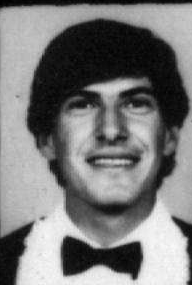 |
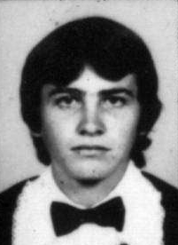 |
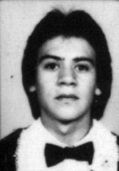 |
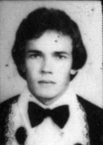 |
ANTONIO CARLOS BETIM M. DE LACERDA |
ARNO MARTINAZZO |
CARLOS AUGUSTO TOURINHO |
CARLOS EDUARDO SCHIPANSKI |
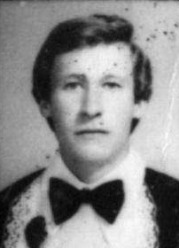 |
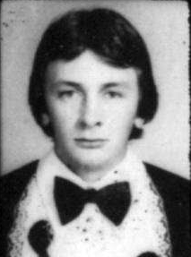 |
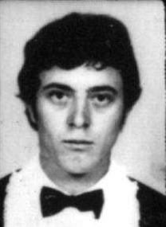 |
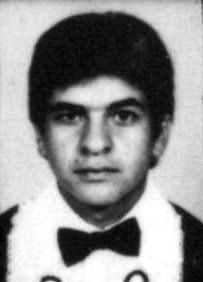 |
CECILIO MCHALOVCZ |
ISIDORO IURKIU |
IVO PERETTI |
JEFFERSON L. PEREIRA |
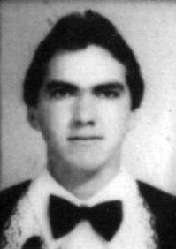 |
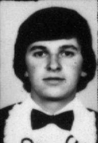 |
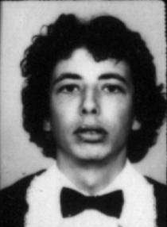 |
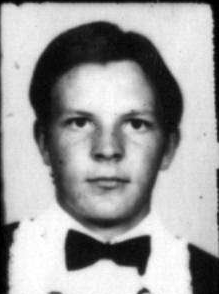 |
JOÃO CARLOS VALIATI |
JOÃO DONATO CHOJNACKI |
JOELSON LUIZ MARQUES |
JOSE CARLOS OLIVETTE |
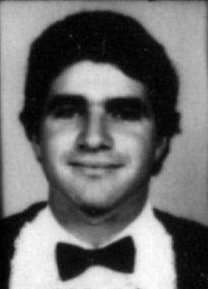 |
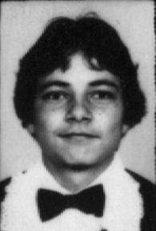 |
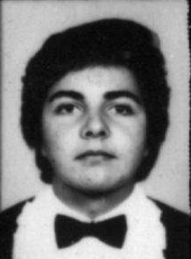 |
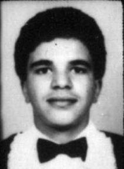 |
JOSE FRANCISCO DEMÁRIO |
LEOMBERTO A. REFOSCO |
LUIZ ALBERTO ROCHA |
MARCELO BODDY |
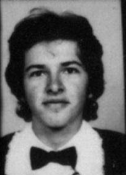 |
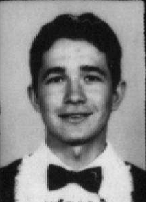 |
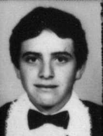 |
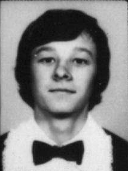 |
MARCOS ALBERTO GUERREIRO |
MARIO KUCHLA |
PAULO M. F. SLOMPO |
RENATO SUCHODALAK |
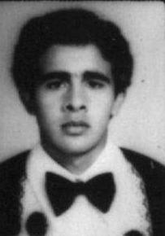 |
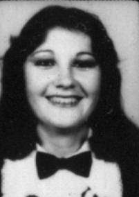 |
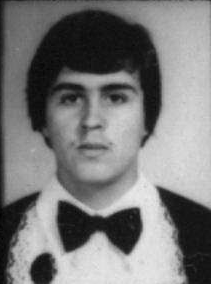 |
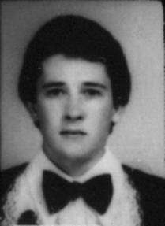 |
SANDRO J. SILVÉRIO |
TÂNIA M. SÉKULA |
UBIRATÃ M. ANDRADE |
VILMAR IVACIO BECKER |
| 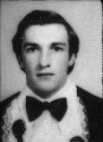 | 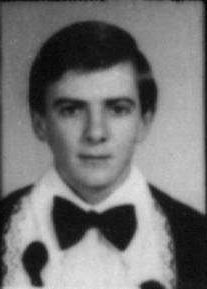 | ||
WALDEMAR LABIAK |
WILMAR C. DIERINGS |
||